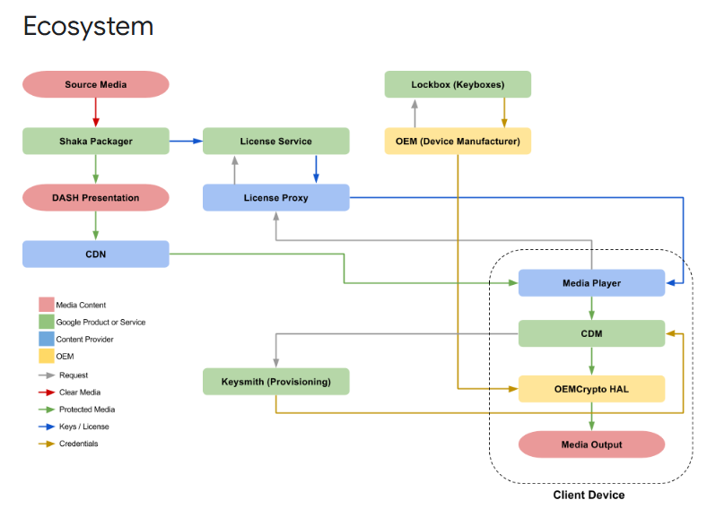

How Is EME Used?
EME is used whenever a website needs to play encrypted or DRM-protected content through an HTML5 video player. Instead of exposing the raw video file, EME creates a secure communication path between the web browser, the streaming website, and the browser's Content Decryption Module (CDM). This process ensures the content can be viewed but not downloaded, copied, or screen-captured easily.
A. The Website Loads Encrypted Media Segments
When a user presses "Play" button, the browser begins receiving video segments that
are encrypted using standards like CENC (Common Encryption). These segments look like
meaningless data until the browser receives the proper decryption keys.
Without EME, the browser wouldn't know:
- how to request the keys
- how to handle licensing rules
- how to use the CDM
- whether the user is authorized to play the content
B. JavaScript Creates a MediaKeys Environment
The streaming website uses JavaScript to:
- create a MediaKeys object
- attach it to the <video> element
- generate a license challenge (a key request)
This step is where EME connects the webapge to the browser's DRM system.
C. A License Request Is Sent to the DRM Server
The browser sends a message to the website's license server that includes:
- the user's device information (non-personal identifiers)
- the content ID
- supported key systems (e.g., Widevine, PlayReady, FairPlay)
- the encryption scheme
The license server then chcks if the user is allowed to watch the content.
D. The License Server Responds With a Decryption Key
If the user is authorized (logged in, subscribed, in correct region), the server sends back a decryption license. This license includes:
- keys needed to decrypt the media
- rights (HD, 4K, HDR, offline)
- expiration time
- restrictions (e.g., screenshot blocking)
E. The CDM (Content Decryption Module) Decrypts the Media
Once the browser receives the license, the CDM decrypts the video in memory. The decrypted frames are immediately passed to the video renderer, the user never gains access to the raw video file. This protects content from:
- downloading
- tampering
- screen capture tools
- codec modifications
Real-World Examples of EME Usage
Here are high-quality, industry-accurate examples of major platforms using EME.
Netflix
Netflix is the most well-known use case for EME.
- uses EME to create a MediaKey session
- requests a Widevine or PlayReady license
- sends personalized restrictions (1080p or 4K depending on your device)
- blocks downloading or screen capturing
YouTube Premium Movies
When a user rents or purchases a movie on YouTube, the platform uses Google Widevine DRM to protect the file. EME ensures:
- only authorized users play purchased movies
- playback quality matches your device
- certain movies can't be streamed in 4K on unsupported browsers
- browser-based piracy tools can't extract the video file
Disney+
Disney+ uses EME with both Widevine and PlayReady depending on the device. The system enforces:
- 4K HDR support only on certain browsers (Chrome, Edge)
- blocking playback on rooted or jailbroken devices
- secure key exchange for new movie releases